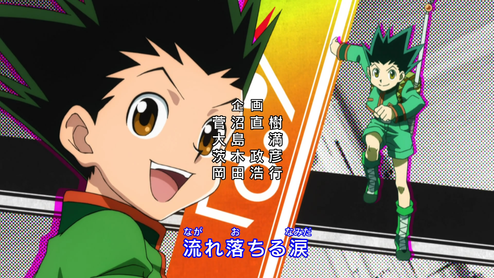

A Hunter is one who travels the world doing all sorts of dangerous tasks. From capturing criminals to searching deep within uncharted lands for any lost treasures. Gon is a young boy whose father disappeared long ago, being a Hunter. He believes if he could also follow his father's path, he could one day reunite with him.
After becoming 12, Gon leaves his home and takes on the task of entering the Hunter exam, notorious for its low success rate and high probability of death to become an official Hunter. He befriends the revenge-driven Kurapika, the doctor-to-be Leorio and the rebellious ex-assassin Killua in the exam, with their friendship prevailing throughout the many trials and threats they come upon taking on the dangerous career of a Hunter.
Join him as he embark on a journey full of adventures, to a world of hunters.
More features coming on future website developments.